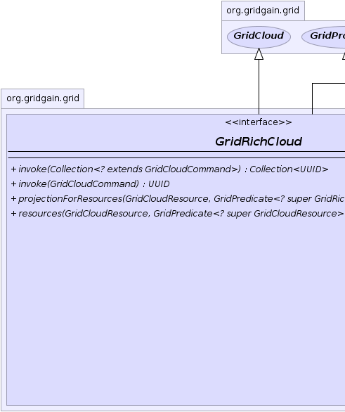
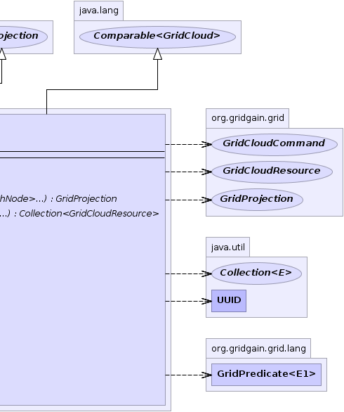

|
|

|
|

|

|

|
GridGain™ 3.1.1c
Community Edition |
|||||||||
| PREV CLASS NEXT CLASS | FRAMES NO FRAMES | |||||||||
| SUMMARY: NESTED | FIELD | CONSTR | METHOD | DETAIL: FIELD | CONSTR | METHOD | |||||||||
public interface GridRichCloud
Defines a "rich" cloud as a cloud-based grid projection.
All main grid entities such as grid, projection, cloud and a node instances can be viewed as
collection of grid nodes (in case of the grid node this collection consist of only one
element). As such they all share the same set of operations that can be performed on a set
grid nodes. These operations are defined in GridProjection interface and called
monadic as they are equally defined on any arbitrary set of nodes.
null values is Java's way to support such monadic invocations.
All methods that accept null values (for monadic purposes) will gracefully handle it by
either returning a finished future, or empty collection, null value, or combination of the
above. Most method calls therefore can be chained without an explicit checks for nulls.
The downside of this approach that inadvertent errors of passing null will not result
in NullPointerException and may be harder to catch.
| Wiki | |
| Forum |
|  |  |
| Method Summary | |
|---|---|
Collection<UUID> |
invoke(Collection<? extends GridCloudCommand> cmds)
Invokes given cloud commands. |
UUID |
invoke(GridCloudCommand cmd)
Invokes given cloud command. |
GridProjection |
projectionForResources(GridCloudResource root,
GridPredicate<? super GridRichNode>... p)
Creates dynamic projection that consists of nodes recursively found from the given root and satisfying all given predicates. |
Collection<GridCloudResource> |
resources(GridCloudResource root,
GridPredicate<? super GridCloudResource>... p)
Gets collection of resources from this cloud. |
| Methods inherited from interface java.lang.Iterable |
|---|
iterator |
| Methods inherited from interface org.gridgain.grid.GridMetadataAware |
|---|
addMeta, addMetaIfAbsent, addMetaIfAbsent, allMeta, copyMeta, copyMeta, hasMeta, hasMeta, meta, putMetaIfAbsent, putMetaIfAbsent, removeMeta, removeMeta, replaceMeta |
| Methods inherited from interface org.gridgain.grid.GridCloud |
|---|
id, parameters, resources |
| Methods inherited from interface java.lang.Comparable |
|---|
compareTo |
| Method Detail |
|---|
Collection<GridCloudResource> resources(@Nullable GridCloudResource root, @Nullable GridPredicate<? super GridCloudResource>... p)
root - Optional root resource. If provided - implementation will recursively
take its adjacent resources. If null - all resources in the cloud
will be taken.p - Optional set of resource predicates. Only resources that pass all
predicates will be returned. If none provided (empty or null) -
all found resources will be returned.
GridProjection projectionForResources(@Nullable
GridCloudResource root,
@Nullable
GridPredicate<? super GridRichNode>... p)
root - Optional root resource. If provided - implementation will recursively
take its adjacent resources. If null - all resources in the cloud
will be taken.p - Optional set of node predicates. Only nodes that pass all
predicates will be returned. If none provided (empty or null) -
all found nodes will be returned.
UUID invoke(GridCloudCommand cmd)
throws GridException
Cloud commands provide the facility to change the cloud by performing various operations on the cloud like adding and removing virtual instances, changing the instance parameters, adding block storage devices, etc. You can invoke one or several cloud commands. Each cloud command will travel to the cloud coordinator - the single node that is responsible for communication with a specific cloud - and will be executed there by the cloud SPI.
Note that executing commands on the cloud can take significant amount of time and depends heavily on the cloud provider. For example, starting a new instance on Amazon EC2 cloud can take up to 10 minutes (but takes only about a minute on average). Furthermore, not all commands produce visible results or results that can be easily attributed back to a specific cloud command. In some cases, the external modifications to the cloud can be mixed up with modifications caused by cloud command invocation in which case it is impossible to distinguish which results caused by what action. Yet in other cases, the external modifications can cancel out the changes from cloud command.
To deal with this inherently non-deterministic nature of cloud operations GridGain relies only on grid events to communicate cloud command invocations (including command execution ID) as well as any changes on the cloud - internally or externally induced. Both cloud command invocation and any detectable changes on the cloud produce grid events that are automatically distributed across the grid and available on each node as local events. User can be subscribe for local events to discern the state change of the cloud.
GridException - Thrown in case of any errors.cmd - Cloud command to invoke.
GridCloudPolicy,
GridCloudStrategy,
Grid.addLocalEventListener(GridLocalEventListener, int...),
Grid.localEvents(GridPredicate[]),
Grid.waitForEventAsync(org.gridgain.grid.lang.GridPredicate , int...),
Grid.waitForEvent(long, Runnable, GridPredicate, int...)Collection<UUID> invoke(@Nullable Collection<? extends GridCloudCommand> cmds) throws GridException
Cloud commands provide the facility to change the cloud by performing various operations on the cloud like adding and removing virtual instances, changing the instance parameters, adding block storage devices, etc. You can invoke one or several cloud commands. Each cloud command will travel to the cloud coordinator - the single node that is responsible for communication with a specific cloud - and will be executed there by the cloud SPI.
Note that executing commands on the cloud can take significant amount of time and depends heavily on the cloud provider. For example, starting a new instance on Amazon EC2 cloud can take up to 10 minutes (but takes only about a minute on average). Furthermore, not all commands produce visible results or results that can be easily attributed back to a specific cloud command. In some cases, the external modifications to the cloud can be mixed up with modifications caused by cloud command invocation in which case it is impossible to distinguish which results caused by what action. Yet in other cases, the external modifications can cancel out the changes from cloud command.
To deal with this inherently non-deterministic nature of cloud operations GridGain relies only on grid events to communicate cloud command invocations (including command execution ID) as well as any changes on the cloud - internally or externally induced. Both cloud command invocation and any detectable changes on the cloud produce grid events that are automatically distributed across the grid and available on each node as local events. User can be subscribe for local events to discern the state change of the cloud.
GridException - Thrown in case of any errors.cmds - Cloud commands to execute. Can be null.
null.GridCloudPolicy,
GridCloudStrategy,
Grid.addLocalEventListener(GridLocalEventListener, int...),
Grid.localEvents(GridPredicate[]),
Grid.waitForEventAsync(GridPredicate, int...),
Grid.waitForEvent(long, Runnable, org.gridgain.grid.lang.GridPredicate , int...)
|
GridGain™ 3.1.1c
Community Edition |
|||||||||
| PREV CLASS NEXT CLASS | FRAMES NO FRAMES | |||||||||
| SUMMARY: NESTED | FIELD | CONSTR | METHOD | DETAIL: FIELD | CONSTR | METHOD | |||||||||
|
GridGain - High Performance Cloud Computing
|
|
|
|